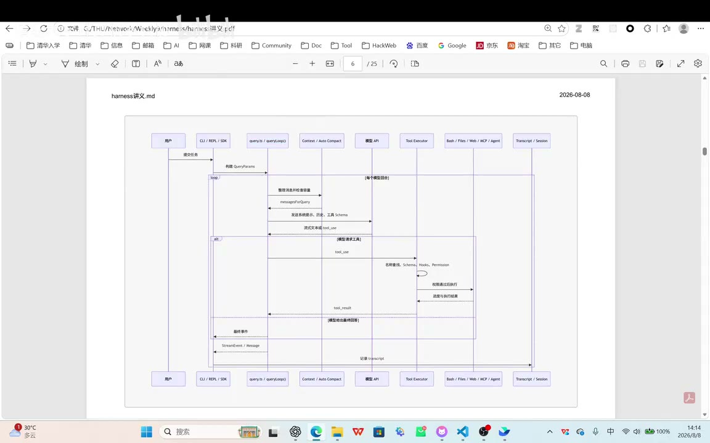

原视频 · 在线回看
点击后联网加载 B 站播放器；本地不下载整段视频。

原视频 · 在线回看
点击后联网加载 B 站播放器；本地不下载整段视频。
来源：手撕 Claude Code 源码：从零理解 Agent Harness
UP 主：清华大学计算机系科协 · 48 分 44 秒 · 深度阅读
链接：https://www.bilibili.com/video/BV18Uu36rEbu/
我们在编码助手里输入：“读一下 README.md。”界面随后显示读取文件，最后给出说明。这个过程看起来像模型自己打开了文件，但模型服务通常没有直接坐在我们的电脑里，也不会因为看到一句请求，就自然知道文件存放在哪里。中间有一套程序准备请求、执行读取，再把文件内容交给模型。
这套围绕模型工作的运行框架，就是 Harness。它安排模型请求与工具执行怎样接续，管理当前上下文、权限、错误和会话记录。对于需要多次查找、修改和测试的任务，Harness 让模型能够根据每一步的新结果继续判断。要理解它，我们可以先跟着一次任务走完，再看每个环节在整体结构中处于什么位置。
用户说要读 README，Harness 先准备一个结构化请求。除了用户的文字，请求里还可能有系统规则、项目说明和可用工具定义。工具定义告诉模型：有一个读取文件的能力，它叫什么，需要哪些参数。模型看到这些信息后，才能提出与程序能够执行的形式对应的调用。
请求进入模型服务后，会被转换成模型能够处理的输入形式。模型生成输出，服务再把有关内容组织成返回结果。如果输出包含读取文件的工具调用，Harness 解析工具名称与参数，找到本地对应的实现，再检查输入是否合法、权限是否允许。通过这些检查后，读取才真正发生。模型生成调用请求，与程序执行调用，是两个不同步骤。
文件内容返回以后，任务还没有必然结束。Harness 把模型刚才的调用和实际读取结果加入消息历史，再发起下一次模型请求。模型这时已经能够看到 README 的内容，才有条件解释其中的信息。如果它还需要查其他文件，就继续提出工具调用；如果信息已经足够，则给出最终回答。这个过程可以反复进行，形成 Agent 的核心循环。
把它压成一条顺序，便于先认清位置：
准备任务与上下文 → 请求模型 → 接收工具调用 → 校验并执行 → 把结果交回模型 → 继续判断或结束。
这里有两个容易混淆的“成功”。工具执行成功，只能说明某个动作已经完成，例如读到了文件；用户任务是否完成，还要看读取的文件是否正确、内容是否被理解、回答是否满足要求。Harness 能把实际结果送回来，模型仍然可能解释错结果。因此，执行记录与最终回答都值得观察。
有些应用只需要把问题交给模型，拿到文字就结束。摘要、改写或简单问答可以采用这种形式，结构直观，也不需要处理多轮工具反馈。如果一个任务有固定的步骤和分支，还可以预先设计工作流，例如先检查条件，再经过审批，最后执行操作。路径由程序规定，模型只承担其中需要语言理解或生成的部分。
编码任务往往更难提前写死流程。模型可能需要先搜索，再根据搜索结果决定打开哪个文件；修改之后运行测试，测试失败又要回到代码里继续检查。每一步依赖刚才观察到的结果，这类“判断、行动、观察，再判断”的循环常被称为 ReAct 式 Agent Loop。它让执行路径能够随着环境反馈调整，但也需要管理停止条件、重试和权限。
多个 Agent 则可以进一步分工。适合独立进行的工作有机会并行处理，完成后汇总结果；同时也增加通信、重复劳动和冲突修改的可能。它可以建立在已有执行循环之上：主 Agent 负责整体任务，子 Agent 各自运行自己的循环。选哪种形式，需要看任务是否真的需要动态决策和分工，复杂结构本身没有自动的质量保证。
接下来观察一个很简单的任务：让 Claude Code 串行调用三个不同工具。用户只写了一句请求，但运行记录里出现了多个模型请求。其中先有一个生成会话标题的辅助请求，之后才进入真正完成任务的循环。这个细节说明，界面上的一轮交互和底层的一次请求不一定一一对应；分析时间或费用时，需要知道每个请求在做什么。
进入主循环后，请求里还加入了用户没有在这一次输入框中重复填写的信息，例如项目的 CLAUDE.md、时间和其他环境说明。CLAUDE.md 可以保存希望跨会话沿用的约定：项目结构、需要遵守的原则、常用工作方式等。新会话加载这些内容后，模型就能在当前任务中使用它们，而不必每次都由用户重新输入。
这是一种通过外部文件提供持续信息的方式。文件内容进入上下文，不意味着模型参数已经被永久修改。它的效果取决于文件是否被加载、内容是否适用，以及模型是否正确理解。放得越多也未必越好：过时的规则、重复的说明和无关资料，同样会进入模型需要处理的范围。
第一轮模型响应可能包含可见文本，以及真正请求执行的工具调用。Harness 收到调用后执行工具，把结果加入历史，连同前面的信息一起发给模型。第二轮因此知道第一步实际做了什么，可以决定接着调用第二个工具。每次工具结果都为下一轮增加新的观察，最后模型返回不再包含工具调用的回答，正常流程便结束这一轮任务。
| 模型请求的位置 | 比上一轮多了什么 | 模型现在能据此做什么 |
|---|---|---|
| 第一次主任务请求 | 用户目标、项目约定和工具说明 | 选择第一步动作 |
| 第一个工具执行后 | 刚才的调用与真实结果 | 判断结果，再选择下一步 |
| 后续工具执行后 | 更完整的执行历史 | 继续处理剩余要求或修正做法 |
| 最后一轮 | 完成任务所需的已有结果 | 给出回答，不再提出新调用 |
这张表描述的是当前观察到的串行过程。实际 Harness 还可能并行执行某些工具，或者因为错误、取消、预算限制提前停止。没有新工具调用，可以作为正常结束的一种信号，却不能独自证明用户的所有要求都完成了。
模型服务之间的请求协议可能不同。即便都使用 JSON，也不代表字段和消息结构相同。例如，一种接口用 input 描述输入，另一种用 messages 保存消息列表；工具调用、工具结果和流式响应也可能使用不同的组织方式。如果客户端按一种协议发送，服务端却只接受另一种，换一个模型名称并不能消除格式差异。
这时需要客户端原生支持相应协议，或通过适配层转换请求和响应。转换也不只涉及把某个字段改名：工具调用的标识、参数和结果必须对应起来，流式事件也要被正确处理。否则普通问答可能勉强工作，一旦涉及多轮工具执行，就会因为消息关系不完整而出错。
这里把接口差异放在最小循环之后理解，是因为我们现在知道了消息承担什么作用。系统需要把用户任务和工具说明送进去，也要把调用请求和执行结果准确接回来。协议兼容问题影响的是这条交接路径，具体产品和服务支持哪些协议，则应按使用版本的说明判断。
Claude Code 的内部结构在这里采用旧版代码分析作为观察角度，来源并非当前官方公开实现，因此下面的函数和模块关系应按这次材料理解，不能直接当作最新版源码指南。更稳定、也更值得掌握的是职责怎样划分：入口接收任务，启动流程准备环境，核心循环推进工作，状态服务保留过程，外部系统提供实际能力。
第一块是入口与界面。命令行进程需要接收参数，交互界面需要等待用户输入、显示结果；非交互模式或程序集成则可能直接提交任务并等待返回。IDE 和远程会话又提供了另外的入口。它们面向使用者的方式不同，但没有必要各自重新实现一套模型与工具循环。
第二块是应用编排。配置、身份认证、斜杠命令、插件与技能，以及任务拆分等，都需要在相应位置管理。第三块才是核心运行时：它负责模型请求、上下文整理、工具调用和权限检查之间的循环。第四块保存会话、任务状态并记录运行情况。第五块是外部模型服务、Shell、文件系统和远程工具等实际依赖。
| 部分 | 主要承担的工作 | 与其他部分的连接 |
|---|---|---|
| 入口与界面 | 接收输入，显示过程，处理交互 | 把任务交给运行核心，接收执行事件 |
| 应用编排 | 配置、认证、命令和扩展 | 准备本次任务可用的环境与能力 |
| 核心循环 | 请求模型，处理工具，推进任务 | 使用准备好的依赖，不断更新任务状态 |
| 状态与观测 | 保存会话、恢复状态、记录用量 | 在执行过程中持续接收记录 |
| 外部系统 | 模型服务、本地命令、文件和远程工具 | 执行请求并返回真实结果 |
一项能力可能横跨几个部分。比如，恢复会话需要状态服务保存历史，启动流程读取历史，核心循环把历史作为上下文继续使用。只知道有一个名为 session 的模块，还不足以理解恢复怎样发生；沿着这些连接看，才能明白信息从哪里来、被谁使用。
在进入真正的 Agent Loop 之前，程序需要完成许多准备。main 一类入口处理进程启动、退出或中断，以及命令行参数；run 一类启动流程读取用户和项目配置，建立认证与 API 客户端，准备会话。随后还要了解当前工作目录、项目约定、仓库状态和工具权限，才能知道本次任务在什么环境里执行。
这些信息会影响实际行为。同样一句“修改配置文件”，当前目录不同，应该操作的文件就可能不同；可用工具或权限不同，能够执行的方法也不同。项目里的技能、外部工具连接和当前运行模式，也需要在这一阶段发现或准备。外部 MCP 工具可以被转换成内部统一的工具描述，加入本次任务可用的工具集合。
环境准备好以后，系统再根据入口决定如何接收任务。交互模式等待用户继续输入，单次输出模式直接处理给定请求。真正交给核心循环的，是一个包含必要依赖的参数集合，材料中用 QueryParams 表示。它可以包括已有消息、系统提示、工具、权限回调、所选模型、轮数和预算等。这些参数告诉循环：开始这次工作时，有哪些条件和限制。
开始之后，状态又会持续变化。工具返回了新的内容，历史消息增加，任务消耗了部分预算，或者上下文经过压缩。QueryLoopState 表示这类执行中不断更新的状态。QueryParams 与 QueryLoopState 的区别，就像“出发时拿到了什么”和“现在进行到哪里”：前者定义本次运行的起点与依赖，后者记录沿途变化。
交互界面有一个外层循环，通常称为 REPL，即读取、求值、输出循环。它不断等待用户输入。如果收到的是斜杠命令，就交给对应的命令处理；如果收到普通任务，就准备参数，进入核心执行流程。一次任务完成以后，外层仍然可以继续等待下一条输入。
内层 Agent Loop 则是在处理当前这一项任务。它反复请求模型、执行工具、接收反馈，直到停止。外层的“一条用户输入”，可能对应内层很多轮模型调用。把这两个循环分清楚，我们就不会把“助手还在等待用户”与“助手正在执行上一项任务”混成同一种状态。
问题是，内层任务可能运行几分钟。如果它直到最后才返回一个结果，外层界面在中间就没有信息可显示，用户会以为程序卡住了。为此，内层可以不断产生事件：一段新文字、工具开始、工具结束，或者发生错误。外层收到事件后更新界面，让用户知道任务仍在进行。
异步生成器是实现这种方式的一种手段。普通异步函数通常在结束时给出一个最终结果；异步生成器可以在等待模型或工具的同时，多次产生中间事件。TypeScript 中的 async function*、yield 和 for await 可以用于这样的生产与接收关系。这里不必先背语法，只要理解：核心持续报告发生的事情，界面持续接收并展示。
事件流还建立了一个有用的边界。同一套核心循环可以把事件交给终端、其他界面或调用它的程序，各入口决定怎样显示和保存，不必把界面绘制逻辑塞进工具执行里。QueryEvent 因此描述的是运行中发生了什么，也让核心逻辑更容易被不同入口复用。
模型需要知道怎样提出调用请求，因此工具要提供名称、用途和参数结构。以 Edit 为例，模型必须知道它用于字符串替换，需要定位哪个文件、把哪段旧内容替换成新内容，以及某些选项允许什么类型。input schema 定义这些输入要求，例如字段是否必填、值应当是字符串还是布尔值。
执行程序关心的则更多。工具当前是否启用，决定它能否出现在可用工具集合中；输入校验决定参数是否符合定义；权限检查决定这次动作是否允许；执行函数真正完成操作。工具还可能说明自己是否只读、是否具有破坏性，以及能否和其他调用并发。它同时承担“让模型理解”和“让程序可靠执行”两面的约定。
| 给模型看的信息 | 给执行程序使用的能力 |
|---|---|
| 工具叫什么，什么时候使用 | 在工具集合里找到对应实现 |
| 参数是什么，类型和限制有哪些 | 校验实际输入是否满足要求 |
| 调用能获得什么结果 | 执行并组织结果或错误 |
| 使用时需要注意什么 | 检查权限、并发和执行边界 |
并发安全是一个直观例子。读取相互独立的文件，常常可以同时进行；两个调用同时修改同一个文件，则可能互相覆盖或基于不同状态修改。模型即便在一次响应里提出多个工具调用，执行层也不能一律同时运行。它需要根据具体操作的性质安排执行，保留必要的先后关系。
Bash 工具尤其需要谨慎。命令字符串看起来可能很简单，但复合命令、重定向或子命令会改变它实际做的事情。材料中的处理思路是，先校验参数，再通过静态分析判断能否可靠地按只读动作处理；无法明确解析的情况采用更保守的策略。工具的风险分类应由可信的执行逻辑检查，不能仅凭模型自己声明“这是只读”就放行。
一个网站的能力可以通过普通网络请求调用，也可以由 MCP 服务把可用工具统一描述出来。客户端连接服务后，获取工具列表，再把外部工具映射到自己内部使用的工具结构。这样，模型看到的仍然是工具名、说明和参数，并能像调用其他工具一样提出请求。
真正执行时，内部工具实现把请求发送给对应 MCP 服务，服务处理后返回结果，再由客户端转换成模型能够接收的工具结果。核心循环不必为每一个外部服务发明完全不同的消息流。协议中的 tools/list 与 tools/call 分别承担工具发现和调用，它们是协议方法，不能简单理解为所有服务都必须暴露的固定 HTTP 路径；具体传输方式另有约定。MCP 工具协议
统一调用方式没有消除权限问题。连接远程服务需要适当认证，某个工具是否可以用于当前任务仍要判断，返回结果也可能出错或包含不可信内容。MCP 让能力更容易接入，Harness 仍然负责把它放进已有的校验、执行和结果处理流程中。
模型已经提出调用，系统却还没有执行，这个位置正适合检查权限。先找到工具，校验输入，再根据动作类型和当前规则决定允许、拒绝，或请用户确认。用户确认后，操作还可能受到沙箱、文件访问和网络规则的限制。权限因此是一组在执行路径上生效的安排，无法只靠上下文里的一段提醒完成。
这也解释了为什么工具说明与权限检查需要同时存在。说明帮助模型选择合理动作，权限系统处理即便模型选择不合理时也不能越过的边界。例如，一个参数格式完全正确的文件操作，目标路径仍可能不在授权范围内。格式合法回答的是“程序能不能理解”，权限判断回答的是“这次任务允不允许这样做”。
权限拒绝或用户取消也需要成为可理解的结果，让模型知道原先的行动没有完成。否则模型可能继续沿着“已经执行成功”的假设往下推断。正确的反馈既保护系统，也帮助模型理解当前条件，从而选择其他可行办法，或明确告诉用户需要哪些条件才能继续。
实际发送给模型的内容可能分布在不同字段里。系统规则介绍助手角色、行为要求和环境，消息历史包含用户任务、模型响应与工具结果；项目约定、当前时间和附加目录信息，也可能被应用组织进请求。模型看见的是最终准备好的这些内容，用户界面通常只显示其中一部分。
因此，当我们分析一次异常回答时，要区分“用户没有在这次输入”和“模型完全没有收到”。某些信息可能由程序自动加入，例如工作目录、仓库状态或项目说明；另一些信息虽然保存在磁盘上，却未必已经加载。只有看清本次请求包含什么，才能知道模型是在什么条件下作出判断。这类记录可能包含私有资料，查看和分享时也需要控制范围。
技能提供了按需加载的一种方式。技能文件通常有名字、简介和详细内容，还可以附带脚本、参考资料。系统先把技能的名称与简介提供给模型，让它知道有哪些可用方法；任务匹配时，再加载相应说明。这样，模型不必一开始就接收所有技能的完整内容。
这是一种上下文管理策略。简介承担发现和选择的作用，详细内容承担实际指导的作用。简介如果不准确，模型可能找不到需要的技能；详细内容如果过时，加载以后仍然会影响任务。把资料分层加载节省了空间，资料本身的质量和适用条件仍然要维护。
当主 Agent 需要把工作交出去，可以调用一个创建子 Agent 的工具。调用参数包含任务描述、具体提示和子 Agent 类型等信息。执行层据此建立子任务，子 Agent 获得自己的上下文并运行，完成后再把结果或状态通知主 Agent。这条路径仍然符合我们已经理解的工具循环，只是工具执行的内容变成了另一个 Agent 的工作。
报数的例子把这个结构缩得很小：主 Agent 创建三个子任务，分别处理对应的报数要求。每个子任务有自己的运行记录，完成后通知主任务，再由主 Agent 汇总。工具返回“成功启动”时，只说明任务已经建立；后续完成通知，才表示相应子任务已经结束。这两个状态必须区分，否则主 Agent 可能在工作还没做完时就宣布全部完成。
这个例子帮助看清委派机制，但没有证明复杂任务只要拆成三个就能变好。真正的子任务还需要足够的背景、清楚的边界和可检查的交付。对于会修改共享文件的工作，还要注意前面讨论的并发安全。子 Agent 复用了执行循环，也继承了执行循环需要管理的权限、状态和错误问题。
循环持续进行，历史会越来越长。模型的上下文容量有限，Harness 因而需要在适当时机整理已有信息。常见思路是把较长的历史总结成更短的内容，保留继续任务所需的要点，再用这份摘要进入后续请求。自动压缩什么时候触发，属于具体实现和配置，不能把一个示意阈值当成固定标准。
手动执行 compact 的例子展示了这个过程。原有对话后面增加了一次要求总结历史的请求，模型返回摘要；下一次用户发消息时，较长的历史被摘要替代。请求中还告诉模型，这段会话从之前的上下文延续而来，必要时可以去保存的记录中查找更详细的信息。
在这次轨迹里，临近压缩前的部分消息也被保留，用于继续交互。它展示了一种实际观察到的整理结果，不能据此推定所有版本、所有自动压缩都采用完全相同的保留方式。更重要的是，我们现在知道摘要接在循环的什么位置：模型下一次判断所依据的历史变短了，能够继续运行，但未被保留的细节也可能影响后续理解。
摘要质量因此不能只看长度。如果目标、已经完成的事情、尚未解决的问题和重要限制没有保留下来，模型可能重复工作或忘掉约束。原始记录仍然存在，也不等于模型一定会主动找回缺少的内容；它需要知道相关细节可能在哪里，并在必要时读取。压缩与外部记录配合，可以延长任务持续时间，但信息取舍仍然会影响质量。
Harness 把一次模型输出接成可持续执行的过程。它准备上下文，请求模型，处理工具与权限，接回结果，再决定继续或停止。界面看到的一次任务，可能包含多轮请求、多个工具，甚至其他子任务；每一步之间的信息交接，都会影响最终表现。
沿着读取 README、三个工具串行调用、子任务报数和手动压缩这几个例子，我们可以看见同一条主线：模型提出行动，程序管理实际执行，结果回到下一次判断。入口、配置、事件流、工具描述、权限和会话状态都围绕这条主线工作。记住它们承担的职责，之后阅读不同 Agent 的实现就更容易找到方向。
模型提出读取文件后，到它真正能够根据文件回答，中间经过了哪些程序步骤？哪一步可以发现路径或权限问题？
QueryParams、QueryLoopState 和 QueryEvent 分别描述开始条件、当前状态还是运行中发生的事情？试着把它们放回一次工具调用中解释。
如果一个子任务显示启动成功，或者一次工具返回成功，为什么主 Agent 仍然需要检查整个用户目标是否完成？沿着实际执行记录回答，能看见这些状态之间的区别。